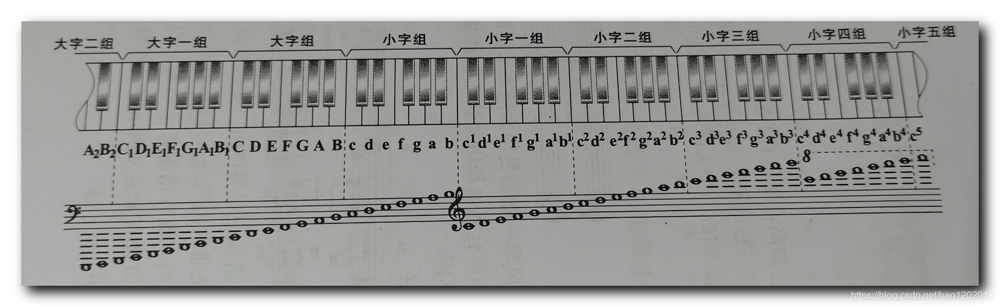
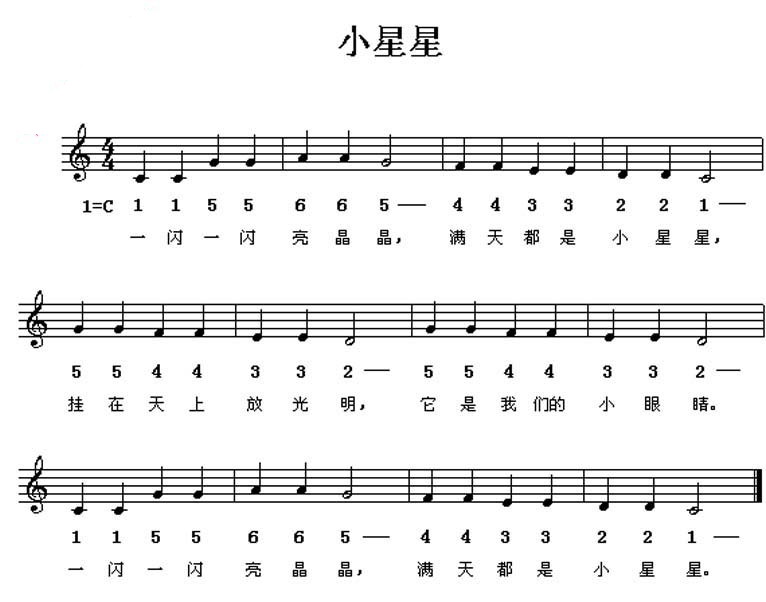

arduino Tone
用于输出一定频率的pwm,可以让扬声器或者蜂鸣器发声。
tone
发声 void tone(uint8_t _pin, unsigned int frequency, unsigned long duration = 0)
pin 引脚
frequency频率
duration持续时间
noTone
停止发声 void noTone(uint8_t _pin)
设置ledc通道(esp32独有)
void setToneChannel(uint8_t channel = 0) esp32的tone 依赖ledc实现，可以设置使用的ledc通道。
将乐谱翻译为控制时序
1939年在伦敦的国际会议上决定，以小字一组的A为标准音，机械波为440Hz、波长为78cm。
可以看出每组七个白键，5个黑键。如小字一组c到小字二组c,有十二份最小间隔(最小间隔是一个半音关系)。
自然泛音中，频率翻一倍则是弦长一半分段振动，我们以二倍一个八度。也就是二倍频率关系对于这十二份间隔。 我们为了方便转调，将每份间隔均等划分，也就是十二平均律的做法。也就是将二倍划分开十二次根号得到最小间隔。
那一个半音关系就是 十二次根号下2， 同时这里有了标准音 440Hz，根据音的距离，乘除对应个数量的半音关系倍数（十二次根号下2）即可得到对应音的频率。 （当然音高较高区域人类听觉会与真实倍数有偏差，较高区域实际调音可能需要依靠经验。）
这里还需要理解音符的时值，我们可以简单的通过音符名称，全音符二分音符四分音符八分音符等等，理解他们直接的时值的倍数。像其他的三连音五连音，以及附点音符可以自行研究。
拍号只是决定以什么音符为一拍，一小节几拍。如4/4 就是4分音符一拍，一小节四拍。2/4则是一小节二拍不能直接影响速度。
有些乐谱有严格速度标记， 如♩=60 ，就是一分钟60个四分音符。此外还有 速度术语 带修饰性的 如慢板或者缓慢地或者意大利语对应的含义。
#include <Arduino.h>
const int stdStep = 400;
// 音符之间的间隔， 因为没有连音符号情况下，时值其实是不足完整的节拍时间，不然音会连起来。
const int stepDelay = stdStep / 10;
// 四分音符时值
const int step = 400 - stepDelay;
int twoStep = stdStep * 2 - stepDelay;
const uint8_t pin = 1;
#define C4 262
#define D4 294
#define E4 330
#define F4 349
#define G4 392
#define A4 440
#define B4 494
void setup() {
}
void play(unsigned int frequency, unsigned long duration) {
noTone(pin);
tone(pin, frequency, duration);
delay(duration + stepDelay);
}
void loop() {
// 11 55 66 5-
play(C4, step);
play(C4, step);
play(G4, step);
play(G4, step);
play(A4, step);
play(A4, step);
play(G4, twoStep);
// 44 33 22 1-
play(F4, step);
play(F4, step);
play(E4, step);
play(E4, step);
play(D4, step);
play(D4, step);
play(C4, twoStep);
// 55 44 33 2-
play(G4, step);
play(G4, step);
play(F4, step);
play(F4, step);
play(E4, step);
play(E4, step);
play(D4, twoStep);
// 55 44 33 2-
play(G4, step);
play(G4, step);
play(F4, step);
play(F4, step);
play(E4, step);
play(E4, step);
play(D4, twoStep);
// 11 55 66 5-
play(C4, step);
play(C4, step);
play(G4, step);
play(G4, step);
play(A4, step);
play(A4, step);
play(G4, twoStep);
// 44 33 22 1-
play(F4, step);
play(F4, step);
play(E4, step);
play(E4, step);
play(D4, step);
play(D4, step);
play(C4, twoStep);
delay(1000);
}
实际使用过程中，可以将时序存入数组。音范围数量有限，可以只存一份频率，用更小范围的数字音名，同时音符时值也是同理，不用存具体延时，而只是音符类型。
关于计算机可以理解的乐谱，通常是MIDI文件，会记录音高力度音色等等信息，不含真正的波形，类似乐谱，所以MIDI音乐不会太占空间。
我们也可以通过解析midi来播放。
Last modified: 02 八月 2024